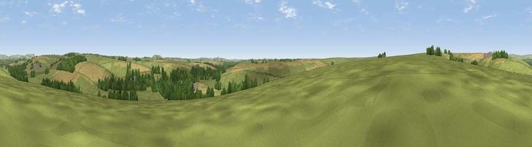

Viewpoint near Enford
#34122 in England · top 69% of its area beats it · near EnfordThe view, rendered

A 360° render of this exact spot computed from the terrain model, tree cover and land cover — summer colours, afternoon light, calibrated against photographs of famous viewpoints. Real trees, hedges and buildings will differ in detail.
The panorama
Grey silhouette: terrain skyline in each direction (720 bearings, Earth curvature and refraction included). Dashed green: skyline with trees (+15 m) and buildings (+8 m) as obstacles. Blue strip: how far the ground is visible on each bearing.
Where the view opens
Wedge length = distance to the farthest visible ground on that bearing (vegetation-aware). Rings at 10, 25 and 50 km.
What fills the view
59% grassland · 26% cropland · 14% woodland · 1% built-up
Angular shares of the visible panorama (visual magnitude), not map area. Landscape diversity 0.43 (0–1 Shannon).
Key numbers
More beautiful places nearby
The staircase of upgrades: each row has a higher view potential than everything closer. Driving times are estimates from straight-line distance, calibrated against real road routing — check an actual route before setting out.
| Place | Direction | Drive | Score |
|---|---|---|---|
| Viewpoint near Upavon | NNW · 2 km | ~5 min | 46.6 |
| Viewpoint near Charlton St Peter | NW · 4 km | ~9 min | 50.8 |
| Viewpoint near Pewsey | NE · 6 km | ~13 min | 57.0 |
| Milton Hill | NE · 8 km | ~17 min | 62.3 |
| Viewpoint near Milton Lilbourne | NE · 8 km | ~17 min | 62.7 |
| Viewpoint near Urchfont | WNW · 10 km | ~19 min | 66.5 |
| Viewpoint near Alton Priors | N · 11 km | ~21 min | 70.3 |
| Viewpoint near Alton Priors | NNW · 11 km | ~22 min | 72.5 |
51.27442, -1.81251 · source: screening · position refined by local search. Computed location — check access rights before visiting.